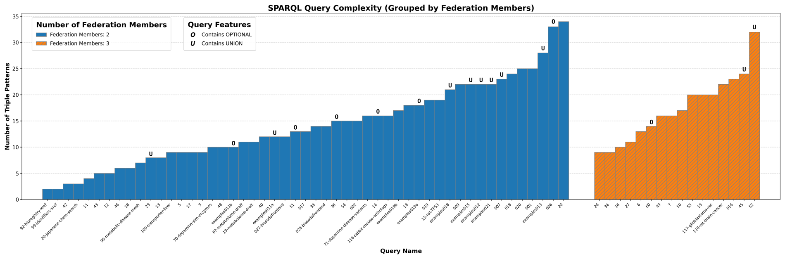
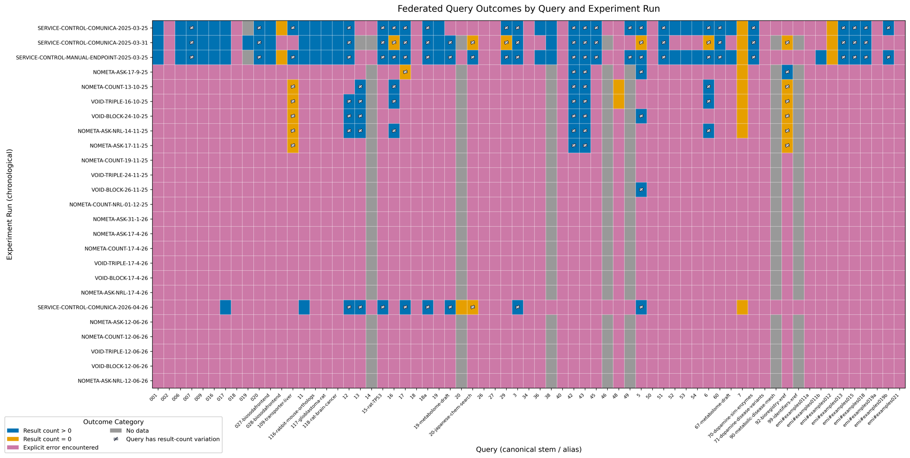
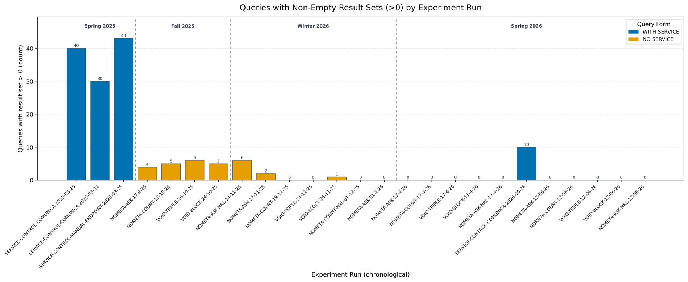

01 · The promise
Motivation One question, multiple databases, no centralization.
“Which human transport
proteins are expressed
in the liver?”1
You
your question
Federation engine divides the query and mediates execution
UniProt SPARQL endpoint
Bgee SPARQL endpoint
UniProt
proteins & what they do
Bgee
gene expression information
other data sources
each independently maintained
one combined answer
Key message Federation queries data where it lives and joins the results, without a central copy.
03 · Two ways to federate
Design Source selection approaches:
“Which human
transport proteins
are expressed
in the liver?”
You
Manual
you name each endpoint
{ …human transporters… }
SERVICE <Bgee> { …liver… }UniProt SPARQL endpoint Bgee SPARQL endpoint UniProt
Bgee
Algorithmic
the engine selects sources
SELECT … WHERE {
…human transporters…
…liver… }engine
?
?
UniProt SPARQL endpoint Bgee SPARQL endpoint UniProt
Bgee
Key message Both approaches can theoretically provide the same answers to the same queries.
03a · Manual federation
Design Federation following user-defined SERVICE clauses
Manual
user defines query decomposition and endpoint targets with SERVICE clauses
# + 8 PREFIX declarations
SELECT ?rhea ?protein ?anat
WHERE {
GRAPH <https://sparql.rhea-db.org/rhea> {
?rhea rh:isTransport true .
}
?protein up:annotation ?ann .
?protein up:organism taxon:9606 .
?ann up:catalyticActivity ?ca .
?ca up:catalyzedReaction ?rhea .
BIND(uberon:0002107 AS ?anat)
SERVICE <https://www.bgee.org/sparql> {?seq genex:isExpressedIn ?anat .
?seq lscr:xrefUniprot ?protein .
?seq orth:organism ?organism .
?organism obo:RO_0002162 taxon:9606 .
}
}
human transporters
expressed in the liver
UniProt SPARQL endpoint target
Bgee SPARQL endpoint
1
whole query
2
SERVICE block
3
results
⋈ joins results
4
joined answer
03b · Algorithmic federation
Design Federation via a federation engine
Algorithmic
the engine mediates query decomposition and source selection,
plans the join(s), then executes the plan3
1
Ask all endpoints
transporters
liver
UniProt SPARQL endpoint Bgee SPARQL endpoint ✓
✕
✕
✓
every part × every endpoint
2
Plan sources & join
⋈
join
transporters
liver
UniProt SPARQL endpoint Bgee SPARQL endpoint a source per part + join
3
Execute & return
UniProt SPARQL endpoint Bgee SPARQL endpoint ⋈
join on the client, return
03 · Two ways to federate
Design Source selection approaches:
“Which human
transport proteins
are expressed
in the liver?”
You
Manual
you name each endpoint
{ …human transporters… }
SERVICE <Bgee> { …liver… }UniProt SPARQL endpoint Bgee SPARQL endpoint UniProt
Bgee
Algorithmic
the engine selects sources
SELECT … WHERE {
…human transporters…
…liver… }engine
?
?
UniProt SPARQL endpoint Bgee SPARQL endpoint UniProt
Bgee
Key message Both approaches can theoretically provide the same answers to the same queries.
04 · The queries
Design Real research questions, written by domain experts.
Domain experts
using SIB’s public endpoints
Question + query pairs
published as endpoint examples 67
federated
queries in our study
What they ask (paraphrased)
“Which human cancer genes have counterparts in the rat brain?”
UniProt · OMA · Bgee
“Which protein patents have already expired?”
UniProt · European Patent Office
“Which human transport proteins are expressed in the liver?”
UniProt · Bgee · our running example
Why “real world”?
> ½
confirmed use or open question
≈ ¼
results in peer-reviewed papers
2–3
sources, ≈ 15 triple patterns
Key message Every query answers a real biological question, written by a domain expert.
05 · Study set-up
Design The same real-world queries, repeated over one year.
67
real queries
target
20+
public endpoints
×
2
ways to federate
manual vs. algorithmic
×
25
runs over 14 months
Spring 2025
Fall 2025
Winter 2026
Spring 2026
Mar 2025 – Jun 2026 · each query in every run (4 manual, 21 algorithmic) · runs grouped into 4 periods for display
Key message A longitudinal study on live endpoints: federation as users actually experience it.
Explore every query and run in the interactive results explorerecrum19.github.io/fed-survey-results ↗
06 · Finding 1
Finding 1 Algorithmic source selection rarely produced results.
Manual
4 runs
47% non-emptydefault-service-test-1: 30 non-empty, 8 empty, 23 errors of 61 default-service-test-1: 30 non-empty, 8 empty, 23 errors of 61 default-service-test-1: 30 non-empty, 8 empty, 23 errors of 61 service-control-31-03-25-comunica: 40 non-empty, 0 empty, 26 errors of 66 service-control-31-03-25-comunica: 40 non-empty, 0 empty, 26 errors of 66 service-control-31-03-25-endpoint: 43 non-empty, 0 empty, 23 errors of 66 service-control-31-03-25-endpoint: 43 non-empty, 0 empty, 23 errors of 66 service-control-20-4-26: 10 non-empty, 3 empty, 54 errors of 67 service-control-20-4-26: 10 non-empty, 3 empty, 54 errors of 67 service-control-20-4-26: 10 non-empty, 3 empty, 54 errors of 67 non-empty result set
empty result set
explicit error
one column = one run of every query
Algorithmic
21 runs
2% non-emptyEX1-17-9-25: 4 non-empty, 2 empty, 54 errors of 60 EX1-17-9-25: 4 non-empty, 2 empty, 54 errors of 60 EX1-17-9-25: 4 non-empty, 2 empty, 54 errors of 60 EX2-13-10-25: 5 non-empty, 4 empty, 51 errors of 60 EX2-13-10-25: 5 non-empty, 4 empty, 51 errors of 60 EX2-13-10-25: 5 non-empty, 4 empty, 51 errors of 60 EX3-16-10-25: 6 non-empty, 4 empty, 50 errors of 60 EX3-16-10-25: 6 non-empty, 4 empty, 50 errors of 60 EX3-16-10-25: 6 non-empty, 4 empty, 50 errors of 60 EX4-24-10-25: 5 non-empty, 3 empty, 52 errors of 60 EX4-24-10-25: 5 non-empty, 3 empty, 52 errors of 60 EX4-24-10-25: 5 non-empty, 3 empty, 52 errors of 60 EX1-NRL-14-11-25: 6 non-empty, 3 empty, 51 errors of 60 EX1-NRL-14-11-25: 6 non-empty, 3 empty, 51 errors of 60 EX1-NRL-14-11-25: 6 non-empty, 3 empty, 51 errors of 60 EX1-17-11-25: 2 non-empty, 2 empty, 56 errors of 60 EX1-17-11-25: 2 non-empty, 2 empty, 56 errors of 60 EX1-17-11-25: 2 non-empty, 2 empty, 56 errors of 60 EX2-19-11-25: 0 non-empty, 0 empty, 60 errors of 60 EX3-24-11-25: 0 non-empty, 0 empty, 60 errors of 60 EX4-26-11-25: 1 non-empty, 0 empty, 59 errors of 60 EX4-26-11-25: 1 non-empty, 0 empty, 59 errors of 60 EX2-NRL-01-12-25: 0 non-empty, 0 empty, 60 errors of 60 EX1-31-1-26: 0 non-empty, 0 empty, 60 errors of 60 EX1-17-4-26: 0 non-empty, 0 empty, 60 errors of 60 EX2-17-4-26: 0 non-empty, 0 empty, 60 errors of 60 EX3-17-4-26: 0 non-empty, 0 empty, 60 errors of 60 EX4-17-4-26: 0 non-empty, 0 empty, 60 errors of 60 EX1-NRL-17-4-26: 0 non-empty, 0 empty, 60 errors of 60 EX1-12-06-26: 0 non-empty, 0 empty, 60 errors of 60 EX2-12-06-26: 0 non-empty, 0 empty, 60 errors of 60 EX3-12-06-26: 0 non-empty, 0 empty, 60 errors of 60 EX4-12-06-26: 0 non-empty, 0 empty, 60 errors of 60 EX1-NRL-12-06-26: 0 non-empty, 0 empty, 60 errors of 60
≈ 21×
lower success rate with
algorithmic federation
96%
of algorithmic executions
ended in an explicit error
Key message Algorithmic federation was far less reliable than manual federation.
07 · Why it fails
Finding 1 Algorithmic probing exceeds endpoint usage limits.
Requests rejected early
403
3–6 requests before the endpoint replies “403 Forbidden”
Request explosion
924,299 requests for a single query, without a result
What the 1,027 explicit errors were
577
Rejected requests (HTTP 4xx)
222
Server errors (HTTP 5xx)
228
Other (network, parsing, time-outs)
Key message Algorithmic federation can exceed what shared public endpoints are able to serve.
08 · Finding 2
Finding 2 Over one year, the share of answered queries declined.
all 67 queries
0
20
40
60
queries answered
Spring 2025
Fall 2025
Winter 2026
Spring 2026
Manual
Algorithmic
38 → 10
Spring 2025 → Spring 2026
also for manual federation
5 → 0
Fall 2025 → Spring 2026
0 answers in all 10 runs
Key message Reliability declined over the year, for manual and algorithmic federation alike.
09 · Changes over time
Finding 2 Public endpoints evolve as demand grows.
Endpoint migrated
DBGI/EMI → METRIN-KG
14 of 67 queries affected
Service retired
a temporary federation server
retired Sep → Nov 2025
Usage policies updated
UniProt changed its backend
in response to rising traffic
liver query: HTTP 403 in 2026
2 in 3
queries gave a different number of results from run to run.
Identical query and configuration, different result counts.
Key message Routine endpoint changes broke working queries; federation clients could not adapt.
10 · Two sides of one problem
Takeaways Users need answers; maintainers need sustainability.
Query users
complex questions
answers they can rely on
results they can reproduce
Endpoint maintainers
limited hardware & budget
fair use for everyone
keep the service available
more automated traffic
tighter limits
more failed queries
retries &
workarounds
a reinforcing
cycle
Key message Both needs are legitimate; what is missing is coordination between them.
11 · Recommendations
Takeaways Reliable federation requires shared responsibility.
Researchers
Test on live endpoints
repeatedly, over months
Engine developers
Plan within the limits
request budgets, back-off, caching
Endpoint maintainers
Publish the limits
in machine-readable form4
Shared, machine-readable agreements
what each endpoint allows
what each engine will send
Key message Dependable federation needs users, engine builders and maintainers working together.
12 · What’s next
Takeaways Make federation operationally aware.
Today: silent failures, errors, empty or unstable resultsGoal: federation that knows and respects its limits
NEAR TERM
① Publish limits and statusmachine-readable limits, retry hints,
migration signals and service status
e.g. VoRD (S12) → ② Make engines limit-awarerequest budgets, rate-limit-aware planning,
adaptive back-off, caching and
actionable diagnostics
LONGER TERM
③ Evaluate in the wild, over timelongitudinal tests over public endpoints,
reporting failure modes, reproducibility
and request burden
④ Sustainable infrastructurefederation gateways, negotiated access,
mirrors, shared caches, precomputed summaries,
or Triple Pattern Fragments
Key message Federation is not only an algorithmic problem, but an operational one.
13 · Conclusions
Takeaways Federation over public endpoints is not yet reliable.
Manual beat algorithmic by ≈ 21×96% of algorithmic executions ended in an explicit error Both declined within a single yearEndpoints migrated, retired services and updated usage policies Improvement needs community effortUsers, engine builders and maintainers, e.g. through VoRD
Slides Link
Key message Real-world federation needs real-world evaluation and coordinated community effort.
S1 · Measurement
What counts as an answer?
Non-empty result Parseable SPARQL Results JSON with result count > 0.
Empty result Parseable output, but zero bindings returned.
Explicit error No usable output or an exception/error path.
Result-set size agreement is used as a proxy for consistency; the study does not claim semantic binding equality. Direct endpoint execution and the Comunica control were close (65.2% vs. 60.6% non-empty).
S2 · The workload
Moderate syntax, non-trivial federation.

O OPTIONAL · U UNIONHover a bar for details · Open full screen ↗
Average: 14.9 triple patterns (2–34) · 2.24 federation members · few OPTIONAL/UNION.
S3 · From SERVICE to no-service
The running example, as SPARQL.
SERVICE form (manual) original/109_uniprot_transporter_in_liver.rq# Datasources: https://sparql.uniprot.org/sparql/
PREFIX genex: <http://purl.org/genex#>
PREFIX lscr: <http://purl.org/lscr#>
PREFIX obo: <http://purl.obolibrary.org/obo/>
PREFIX orth: <http://purl.org/net/orth#>
PREFIX rh: <http://rdf.rhea-db.org/>
PREFIX taxon: <http://purl.uniprot.org/taxonomy/>
PREFIX uberon: <http://purl.obolibrary.org/obo/uo#>
PREFIX up: <http://purl.uniprot.org/core/>
SELECT
?rhea
?protein
?anat
WHERE
{
GRAPH <https://sparql.rhea-db.org/rhea> {
?rhea rh:isTransport true .
}
?protein up:annotation ?ann .
?protein up:organism taxon:9606 .
?ann up:catalyticActivity ?ca .
?ca up:catalyzedReaction ?rhea .
BIND(uberon:0002107 AS ?anat)
SERVICE <https://www.bgee.org/sparql> {
?seq genex:isExpressedIn ?anat .
?seq lscr:xrefUniprot ?protein .
?seq orth:organism ?organism .
?organism obo:RO_0002162 taxon:9606 .
} }
no-service form (algorithmic) no-service/109_uniprot_transporter_in_liver_ns.rq# Datasources: https://sparql.uniprot.org/sparql/ https://www.bgee.org/sparql
PREFIX genex: <http://purl.org/genex#>
PREFIX lscr: <http://purl.org/lscr#>
PREFIX obo: <http://purl.obolibrary.org/obo/>
PREFIX orth: <http://purl.org/net/orth#>
PREFIX rh: <http://rdf.rhea-db.org/>
PREFIX taxon: <http://purl.uniprot.org/taxonomy/>
PREFIX uberon: <http://purl.obolibrary.org/obo/uo#>
PREFIX up: <http://purl.uniprot.org/core/>
SELECT
?rhea
?protein
?anat
WHERE
{
GRAPH <https://sparql.rhea-db.org/rhea> {
?rhea rh:isTransport true .
}
?protein up:annotation ?ann .
?protein up:organism taxon:9606 .
?ann up:catalyticActivity ?ca .
?ca up:catalyzedReaction ?rhea .
BIND(uberon:0002107 AS ?anat)
{
?seq genex:isExpressedIn ?anat .
?seq lscr:xrefUniprot ?protein .
?seq orth:organism ?organism .
?organism obo:RO_0002162 taxon:9606 .
} }
One change: the SERVICE <https://www.bgee.org/sparql> wrapper becomes a plain group and Bgee joins the data sources, so the engine must place every pattern itself. Files verbatim from fed-survey-results/queries ↗ .
S4 · All outcomes
Failures were widespread across the query set.

≠ result count varies across runsHover a cell for details · Open in explorer ↗
Rows = experiment runs, columns = queries (dashboard order); chronological version in the paper (Fig. 3) .
S5 · Answers per run
Non-empty result sets for each of the 25 runs.

Hover a bar for details · Open in explorer ↗
Queries with result set > 0, per experiment run (dashboard order); chronological version in the paper (Fig. 2) .
S6 · Errors
The errors had an operational signature.
Client-side HTTP (4xx)
577 Server-side HTTP (5xx)
222 Other / malformed response
80
What this means
Most failures did not stem from faulty queries. They were 4xx rejections, 5xx failures, malformed responses, incomplete transfers, or timeout-like interruptions.
403 often after only 3–6 requests
Inspect a representative query ↗
S7 · Request explosions
Some query plans generated extreme request volumes.
1 Probe sources ASK / COUNT requests
→
2 Join remotely intermediate results move
→
3 Materialize locally memory + time accumulate
924,299 HTTP requests from query 6 before failure
No-service median runtime 4.47 s; 90th percentile 247.92 s.
S8 · Algorithmic strategies
All automatic strategies showed low success rates.
Configuration family Planning signal Non-empty results Rate
NOMETA-ASKLive ASK probing 12 / 360 3.33% NOMETA-COUNTLive COUNT probing 5 / 240 2.08% VOID-TRIPLEVoID, triple-pattern granularity 6 / 180 3.33% VOID-BLOCKVoID, larger query blocks 6 / 174 3.45%
Small differences, same conclusion. VOID-BLOCK had the highest success rate and NOMETA-COUNT the lowest; rate-limit variants did not recover success.
All configurations ran in the same Comunica 4.3.0 client.
S9 · Endpoint changes
A live endpoint is part of the experimental treatment.
01
Endpoint migration
14/67 queries touched the former DBGI/EMI endpoint, which moved to METRIN-KG.
02
Service deprecation
A temporary EMI federation server was deprecated in September 2025 and removed in November.
03
Policy updates
UniProt changed backends and updated its usage limits as traffic increased; clients received HTTP 403 responses.
Same query + same configuration ≠ same outcome. 68.7% of queries returned varying result counts across runs.
S10 · Boundaries
What this study does, and does not, claim.
01 Domain-specific The workload and endpoints come from biological Linked Data; other domains may behave differently.
02 Meaningful, not exhaustive 67 queries and a limited endpoint set provide evidence of practice, not a universal benchmark.
03 Causality is incomplete We can observe when outcomes changed, but not always the precise administrative or infrastructural cause.
S11 · The running example
Query 109: transporter proteins in the liver.
# sent to sparql.uniprot.org (PREFIXes omitted)
SELECT ?rhea ?protein ?anat
WHERE {
GRAPH <https://sparql.rhea-db.org/rhea> {
?rhea rh:isTransport true .
}
?protein up:annotation ?ann .
?protein up:organism taxon:9606 .
?ann up:catalyticActivity ?ca .
?ca up:catalyzedReaction ?rhea .
BIND(uberon:0002107 AS ?anat)
SERVICE <https://www.bgee.org/sparql> {
?seq genex:isExpressedIn ?anat .
?seq lscr:xrefUniprot ?protein .
?seq orth:organism ?organism .
?organism obo:RO_0002162 taxon:9606 .
}
}
Spring 2025manual · 2 runs
Fall 2025algorithmic · 4 runs
Winter 2026algorithmic · 7 runs
Spring 2026algorithmic · 10 runs
Spring 2026manual · 1 run
Errors were HTTP 403 Forbidden from UniProt and Bgee within 2–12 requests. One Fall 2025 run was aborted after 609 requests (69 s).
UniProt SPARQL example 109_uniprot_transporter_in_livergithub.com/ecrum19/fed-survey-results ↗ . The paper’s Figure 1 shows query 7 (SwissLipids), which returned no non-empty result in any run.
S12 · Publishing endpoint limits
VoRD: machine-readable descriptions of endpoint limits.
Endpoint
maintainer
describes its limits once,
next to its SPARQL endpoint
query.wikidata.org/sparql
VoRD description ↗ Anonymous clients
≤ 10 requests / min → HTTP 429 + Retry-After
With a User-Agent
≤ 200 requests / min
Established users
≤ 2,000 requests / min
Parallel requests
≤ 3 at once per IP (guidance) → HTTP 503
ex:anonymous a vord:RateRestriction ;
vord:maxValue 10 ; vord:windowDuration "PT1M" .
Federation
engines
plan requests within the limits
and adapt before reaching them
Users
know the limits before querying,
and why a request was rejected
Interrupts the cycle: informed planning → fewer rejections → fewer retries
Key message If endpoints publish their limits, engines and users can stay within them.
S13 · References
Sources cited in this talk.
Crum, E., Tam, B.-E., Hanski, J., Sima, A.-C., Mendes de Farias, T., Bolleman, J., Taelman, R. Does SPARQL federation work in the real world? A case study over large biological SPARQL endpoints. ISWC 2026. ↗ Bolleman, J., et al. A large collection of bioinformatics question–query pairs over federated knowledge graphs: methodology and applications. GigaScience 14, 2025. ↗ The UniProt Consortium. UniProt: the Universal Protein Knowledgebase in 2025. Nucleic Acids Research 53(D1), 2025. ↗ Bastian, F. B., et al. Bgee in 2024: focus on curated single-cell RNA-seq datasets, and query tools. Nucleic Acids Research 53(D1), 2025. ↗ W3C. SPARQL 1.1 Federated Query. W3C Recommendation, 2013. ↗ Schmidt, M., et al. FedBench: A benchmark suite for federated semantic data query processing. ISWC 2011. ↗ Saleem, M., Hasnain, A., Ngonga Ngomo, A.-C. LargeRDFBench: A billion triples benchmark for SPARQL endpoint federation. Journal of Web Semantics 48, 2018. ↗ Schwarte, A., Haase, P., Hose, K., Schenkel, R., Schmidt, M. FedX: Optimization techniques for federated query processing on Linked Data. ISWC 2011. ↗ Görlitz, O., Staab, S. SPLENDID: SPARQL endpoint federation exploiting VOID descriptions. COLD 2011. ↗ Dang, M.-H., et al. FedShop: A benchmark for testing the scalability of SPARQL federation engines. ISWC 2023. ↗ Saleem, M., Khan, Y., Hasnain, A., Ermilov, I., Ngonga Ngomo, A.-C. A fine-grained evaluation of SPARQL endpoint federation systems. Semantic Web 7(5), 2016. ↗ Hernández, D., Hogan, A., Riveros, C., Rojas, C., Zerega, E. Querying Wikidata: Comparing SPARQL, relational and graph databases. ISWC 2016. ↗ Taelman, R., Van Herwegen, J., Vander Sande, M., Verborgh, R. Comunica: a modular SPARQL query engine for the Web. ISWC 2018. ↗ Alexander, K., Cyganiak, R., Hausenblas, M., Zhao, J. Describing Linked Datasets with the VoID Vocabulary. W3C Interest Group Note, 2011. ↗ Williams, G. T. SPARQL 1.1 Service Description. W3C Recommendation, 2013. ↗ Crum, E. VoRD: Vocabulary of Restrictive Datasets, v0.2. ↗